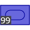
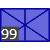
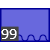
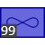

Jest to ekran początkowy. Możesz zostawić mapę jaka jest, bądź zedytować.
Ilość hexów na boku - liczba sześciokótów na boku planszy
Scal lądy - jeśli wokół sześciokątu jest więcej sześciokątów innego typu (mowa tu o morzu lub nie-morzu), przyjmuje on ich typ.
W podsekcji "Edycja" można wybrać typ, którym chce się "rysować" po planszy.
"Generuj nowe" - sześciokąty przyjmą losowy typ, zgodnie z ustawionymi parametrami. "Kod" - zapisanie lub wczytanie planszy z kodu.
Kliknij na dowolną drużynę, by ją uaktywnić.
Kliknij na przycisk "USTAW ODDZIAŁY", by przejść dalej.
By ustawić oddziały, kliknij na wybrany znak wojskowy w sekcji "Bataliony", a potem na wybrane sześciokąty na planszy.
Możesz ustawić maksymalnie 4 oddziały na jednym sześciokącie (taki jest limit).
Możesz zmienić rozmiar oddziału za pomocą suwaka "Wielkość oddziału".
By usunąć oddział, kliknik na prostokąt "USUWANIE", a potem na wybrany oddział na planszy.
Możesz nazwać drużynę inaczej, niż kolor. Po to jest pole tekstowe przy znaczku drużyny.
Kliknij na przycisk "NASTĘPNA DRUŻYNA", by powtórzyć to dla innych, wybranych drużyn.
Zaznacz pole "wszystkim po równo", by następne drużyny miały limit oddziałów ustawiony pod obecną drużynę.
Kliknij "GRAJ", by grać. xd
By ukończyć turę, kliknij na przycisk. Jednak pewnie nie chcesz tego robić od razu, więc jest kilka innych możliwości.
Zaznaczać można oddziały oraz miasta przez nie kontrolowane.
Ma znaczenie, czy kliknie się na oddział, czy na pozostałą część prostokąta.
Gdy oddziałów "na kupce" jest więcej, niż 1, można je "tasować", klikając na nie po kolei.
W menu gry znajduje się suwak. Klikając w odpowiednim miejscu możesz wyznaczyć proporcje podziału lub rozbudowy.
Możesz też zostawić oddział o wielkości 10 (tyle potrzeba, by efektywnie kontrolować każde miasto).
Można też połączyć jednostkę z inną (tego samego typu) lub załadować na transport powietrzny.
Każdy oddział zachowuje się nieco inaczej, zależnie od jego typu.
Pod względem poruszania się można wyróżnić: oddziały lekkie, ciężkie, górskie (jeden typ), morskie oraz lotnicze.
Pod względem zachowania można wyróżnić: oddziały zwykłe, artylerię przeciwlotniczą, oddziały transportujące oraz saperów.
Każdy oddział ma możliwość poruszania się oraz łączenia się z innym, tego samego typu. Ścieżkę można wyznaczać, klikając na podświetlony teren (oczywiście ścieżka może się zaginać). By zakończyć ścieżkę, kliknij na sześciokąt dwa razy. Oddział wykona ilość ruchów odpowiednią do jego zasięgu.
Oddziały lądowe mogą poruszać się tylko po lądzie. Ciężkie oddziały nie mogą przechodzić przez góry, ani atakować oddziałów tam umieszczonych. Oddział lądowy po wejściu na górę zatrzymuje się (nie dotyczy to oddziałów górskich).
Oddziały wodne mogą poruszać się po wodzie i w miastach (także śródlądowych, jeśli istnieje połączenie :D ).
Oddziały lotnicze mogą poruszać się wszędzie. Mogą być atakowane w miastach, bądź gdy jakiś oddział przesumie się na prostokąt, w którym się znajdują.
Tratwy i transportowce mogą przemieszczać oddziały lądowe poza ląd (transportowce nie biorą ciężkich).
Oddziały lądowe mogą poruszać się też po mostach, budowanych przez saperów (by zbudować most, poprowadź oddział saperów przez wodę).
Oddziały mogą atakować przeciwników. By zaznaczyć atak, doprowadź ścieżkę blisko celu i kliknij na ten oddział (musi być zaznaczony na czerwono). Można atakować też mosty.
| Nazwa | Koszt w pieniądzach | Koszt w stali | Szybkość | Atak | Obrona | Zasięg ataku | Rodzaj poruszania | Zachowanie | Uwagi | |
|
Piechota | 8$ | - | 2 | 1 | 1 | 1 | oddział lekki | oddział zwykły | |
|  | Czołgi | 16$ | 2t | 3 | 2 | 2 | 1 | oddział ciężki | oddział zwykły | Dobre do ofensywy lądowej |
|
Artyleria | 16$ | 2t | 1 | 1,6 | 0 | 3 | oddział ciężki | oddział zwykły | Dobre do obrony, łatwo niszczy cele wroga |
|  | Piechota zmotoryzowana | 12$ | 1t | 5 | 1 | 1 | 1 | oddział lekki | oddział zwykły | |
|
Piechota górska | 12$ | - | 2 | 1 | 1 | 1 | oddział lekki (górski) | oddział zwykły | |
|
Artyleria przeciwlotnicza | 16$ | 1t | 1 | 1 | 0 | 3 | oddział ciężki | oddział przeciwlotniczy | Razi lotnictwo ze 2x silniej |
|
Okręty lekkie | 12$ | - | 3 | 1 | 1 | 2 | oddział morski | oddział zwykły | |
|
Pancerniki | 20$ | 2t | 3 | 2 | 2 | 2 | oddział morski | oddział zwykły | Praktycznie najlepszy oddział do zdobywania miast portowych |
|  | Łodzie desantowe | 4$ | - | 3 | - | 0 | - | oddział morski | oddział transportowy | Tanie, ale podatnie na atak. Łatwo nimi zajmować portowe miasta. |
|  | Lotnictwo bojowe | 20$ | 2t | 8 | 1 | 0 | 2 | oddział lotniczy | oddział lotniczy | Łatwo niszczy zwykłą artylerię i razi słabiej bronione miasta. |
|
Lotnictwo transportowe | 12$ | 1t | 8 | - | 0 | - | oddział lotniczy | oddział transportowy | Najlepszy sposób zajmowania odległych miast. |
|
Oddziały saperskie | 12$ | - | 2 | - | 0 | 1 | oddział lekki | oddział saperski | Mogą budować mosty i zakładać miasteczka. |
W sekcji "Górna sekcja" możesz zmienić nazwę miasta, bądź sprzedać nagromadzoną stal.
W sekcji "Załoga" możesz wybrać któryś oddział umieszczony na sześciokącie.
W części "Podatek" możesz zatwierdzić przesyłanie części zarobków do innego miasta. Po kliknięciu przycisku "Zatwierdź", utwórz drogę do tego miasta. Im dłuższa droga, tym wyższe koszty. Jedno pole zwykłego terenu/miasta zabiera 2$, morze 8$, a góra 5$.
W następnej częsci możesz zlecać formowanie nowych oddziałów. Ich wielkość można zmieniać suwakiem "Rozmiar". Każdy oddział wymagający stali, potrzebuje określony poziom produkcji. By obsłużyć jedną stal potrzeba jednej produkcji.
W części "Inwestycje" możesz zlecać rozbudowę kolejno: populacji (właśc. przychodów), produkcji stali oraz przemysłu.